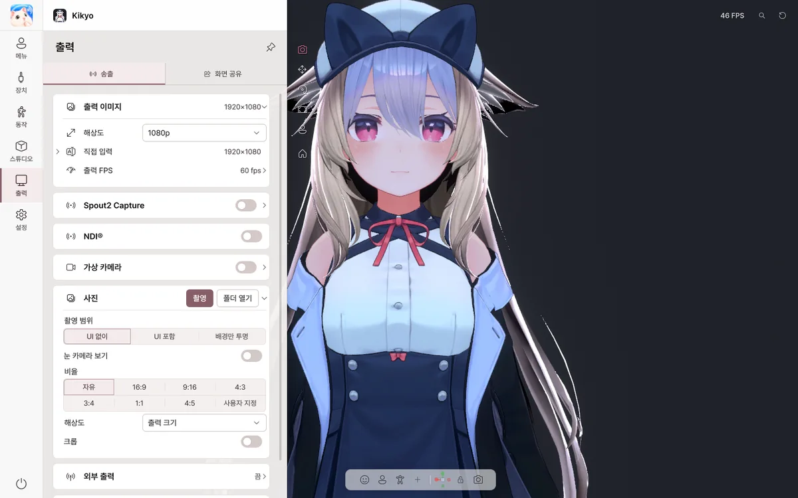
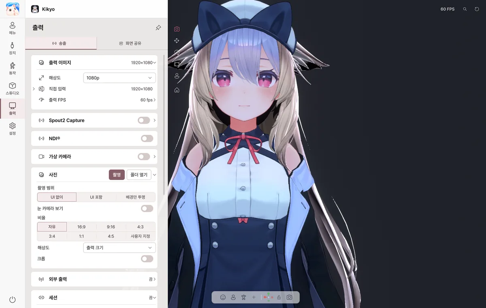
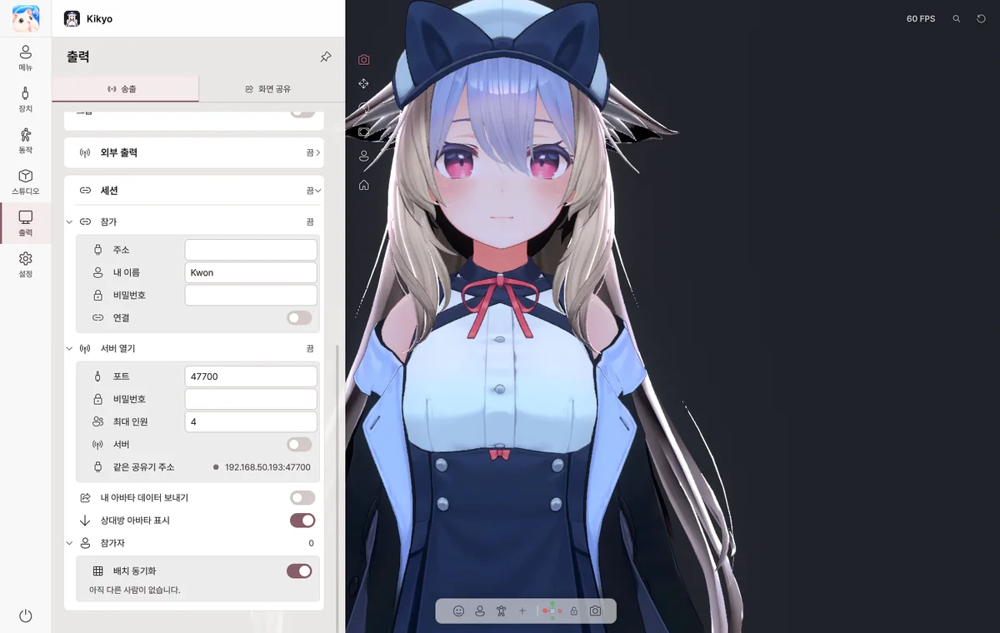
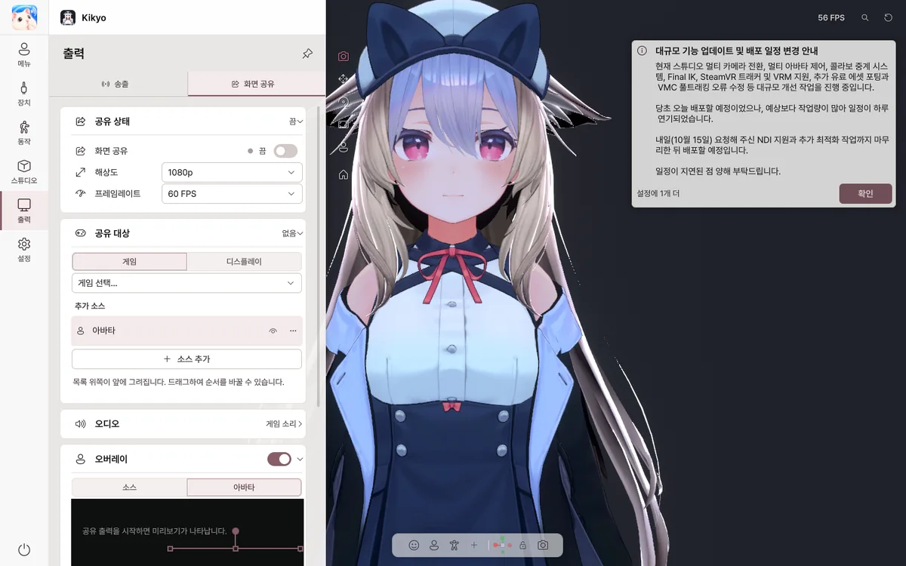
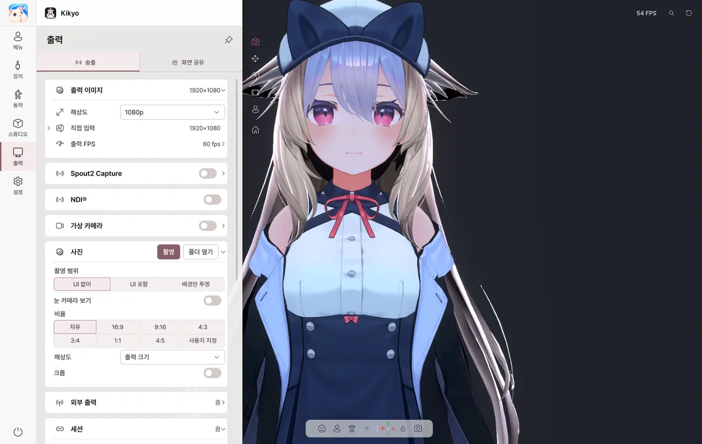
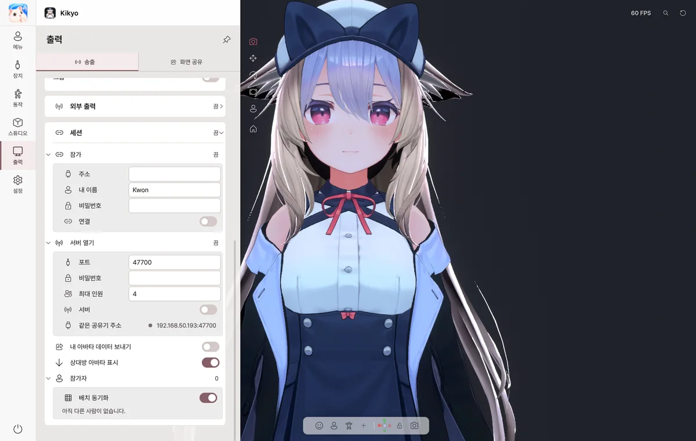

9. 출력: OBS · NDI · 화면 공유 · 원격 세션
이 장에서는 실제로 누가 어떤 화면을 받는지를 기준으로 설명합니다. 스튜디오 카메라를 송출할 때는 그 카메라 화면이 외부 앱으로 나가며, Avatar Live 창은 계속 **씬 뷰(작업 화면)**를 보여줍니다. OBS에는 Avatar Live 창 캡처보다 Spout2 또는 NDI 소스를 연결하는 방식을 권장합니다.

| 원하는 결과 | 고를 방식 | Basic / Pro |
|---|---|---|
| 같은 PC의 OBS에서 투명 배경 아바타 | Spout2 | Basic·Pro |
| 네트워크의 다른 PC OBS/모니터로 아바타 전달 | NDI® | Basic·Pro |
| Discord·Zoom의 카메라 목록에 아바타 표시 | 가상 카메라 | Basic·Pro |
| Discord로 게임 화면과 아바타를 함께 공유 | 화면 공유 | Basic·Pro (일부 추가 소스는 Pro) |
| 여러 스튜디오 카메라의 독립 화면을 각각 OBS로 | 카메라별 Spout2 | Pro (별도 출력 최대 3대) |
| 멀리 있는 사람과 아바타·자세·표정 협업 | 원격 세션 | Pro |
| 방송 결과를 MP4 파일로 남기기 | 녹화 | Pro |
출력 화질과 송출 대상
- 해상도는 OBS·NDI·Spout2로 내보내는 영상의 가로·세로 픽셀 수를 정합니다. 720p는 가볍지만 윤곽이 거칠 수 있고, 1080p는 일반 방송에 권장되며, 1440p/4K는 더 선명하지만 GPU·전송 부담이 큽니다. Basic은 최대 1920×1080, Pro는 최대 3840×2160입니다.
- **FPS(프레임레이트)**는 초당 전달하는 화면 수입니다. 30으로 낮추면 부하를 덜고 움직임은 다소 끊겨 보이며, 60은 팔·얼굴 움직임에 더 부드럽습니다. 최대 60fps로 동작하며 PC의 실제 렌더 속도가 낮으면 송출도 그 속도의 영향을 받습니다.
- 송출 화면은 스튜디오 카메라가 방송 중인지 확인합니다. 씬 뷰를 송출하면 앱 창에서 돌린 시점도 방송 화면에 따라가므로, 방송 구도를 고정하려면 스튜디오 카메라를 송출 대상으로 고르세요.
- 투명 배경을 사용하려면 스튜디오의 배경에서 투명을 선택하고, 수신 측이 알파 합성을 지원하도록 설정해야 합니다. 단순 창 캡처나 일반 가상 카메라는 알파가 그대로 전달되지 않을 수 있습니다.
- 방송용/작업용 구도 차이: 카메라별 전환 또는 포스트 효과를 바꾸면 OBS에서 받아보는 결과가 달라질 수 있으니 최종 방송 전에 OBS 프로그램 화면으로 꼭 확인하세요.
Spout2를 OBS에서 받기
Spout2는 같은 Windows 컴퓨터 안의 두 프로그램이 GPU 이미지를 전달하는 방식입니다. Avatar Live가 송신자, OBS가 수신자입니다. Avatar Live에 Spout2가 있어도 OBS 쪽 수신 플러그인은 별도로 설치해야 합니다.

- OBS를 종료합니다. Off World Live의 OBS Spout2 플러그인 공식 릴리스에서 Windows용 설치 파일을 받습니다. 프로젝트의 설치 설명도 참고하세요. 설치 과정에서 사용하는 OBS의 경로가 맞는지 확인합니다.
- OBS를 다시 실행해 소스 → + → Spout2 Capture가 나타나는지 확인합니다. 없으면 OBS 버전에 맞는 플러그인인지, 올바른 OBS 설치 경로에 설치했는지 확인한 뒤 재실행하세요.
- Avatar Live의 출력 → 송출 → Spout2를 켭니다. 기본 송신 이름은 Avatar Live입니다. 이름을 직접 바꿨다면 적용을 눌러 확정합니다.
- OBS의 Spout2 Capture 소스 설정에서 송신자 Avatar Live(또는 변경한 이름)를 고릅니다. 소스가 화면에 잡히면 OBS에서 위치와 크기를 조절합니다.
- 배경을 투명하게 쓰려면 Avatar Live의 스튜디오 → 배경 → 투명을 선택하고, OBS Spout2 소스의 알파 합성 옵션을 켜거나 해당 플러그인의 Composite with alpha 등의 옵션을 확인하세요. 배경이 검게 나오면 먼저 이 두 설정을 비교합니다.
- 송신 이름을 바꾸면 OBS는 이전 이름을 기억해 검은 화면이 될 수 있습니다. OBS에서 새 이름을 다시 선택하세요.
- 투명도(알파) 보내기를 끄면 투명 배경이 불투명하게 보일 수 있습니다. 일반적인 버튜버 합성은 켜 둡니다.
- 같은 PC의 OBS에 영상이 끊기면 송출 해상도/FPS를 먼저 낮추고 그래픽 드라이버와 Spout2 플러그인 호환성을 확인하세요. 다른 PC에 직접 보내려면 Spout2가 아니라 NDI를 사용합니다.
- **카메라별 개별 Spout2 (Pro)**는 메인 송출과 별개로 카메라별 독립 소스를 OBS에 추가하는 기능입니다. 사용 가능한 별도 송신자 수는 최대 3개입니다. 송신자마다 렌더가 추가되므로 OBS에서 필요한 카메라만 켜는 편이 좋습니다.
서드파티 안내: OBS Spout2 플러그인은 Off World Live가 제공하는 별도 프로그램이며 Avatar Live에 동봉되지 않습니다. 설치·업데이트·사용에는 해당 프로젝트의 배포·라이선스 조건(GPL v2)을 따릅니다. Avatar Live와 제작사가 이 플러그인을 직접 배포·보증하는 것은 아닙니다.
NDI®를 OBS에서 받기 (Basic 지원)
NDI®는 Basic에서도 쓸 수 있는 영상 출력입니다. 같은 네트워크의 다른 PC에 있는 OBS, Studio Monitor 등에 실시간 영상을 전송할 수 있습니다. Spout2와 달리 네트워크를 쓰므로 송신 PC와 수신 PC가 서로 통신할 수 있어야 합니다. Wi-Fi 게스트망·공용망의 기기 격리 설정이 있으면 서로 발견되지 않을 수 있습니다.
- Avatar Live **출력 → 송출 → NDI®**를 켭니다. 기본 NDI 송신 이름은 Avatar Live입니다. 출력 해상도와 FPS는 출력 이미지 설정을 따릅니다.
- OBS를 종료하고 DistroAV (구 OBS-NDI) 공식 릴리스에서 OBS용 플러그인을 설치합니다. 플러그인의 안내에 따라 NDI Runtime을 별도로 설치해야 할 수 있습니다. 예전 OBS-NDI가 남아 있으면 DistroAV와 충돌할 수 있으므로 공식 제거/업그레이드 안내를 따릅니다.
- OBS를 다시 열고 소스 → + → NDI Source(플러그인 버전에 따라 이름이 달라질 수 있음)를 선택합니다. NDI 소스 목록에서 Avatar Live를 선택합니다. 다른 PC라면 두 PC의 네트워크 통신이 가능한지 확인합니다.
- 받아온 영상이 투명도를 포함하고 수신 측이 지원하면 아바타를 다른 장면 위에 합성할 수 있습니다. 배경이 검거나 화면이 없다면 송신 스위치, NDI Runtime/플러그인, 방화벽, 두 PC의 IP 대역과 수신자의 알파 처리를 차례대로 확인합니다.
- OBS 없이 시험하려면 NDI Tools 공식 사이트에서 Studio Monitor 등을 직접 받아 NDI 소스가 보이는지 확인할 수 있습니다. NDI Tools는 Avatar Live에 포함되지 않습니다.

NDI 라이선스·저작권 및 외부 프로그램 고지
- NDI®는 Vizrt NDI AB의 등록 상표입니다. Avatar Live는 NDI 회사의 공식 프로그램이거나 해당 회사가 후원한 제품이 아닙니다. NDI 기술과 상표에 관한 정보는 NDI 공식 사이트에서 확인할 수 있습니다.
- Avatar Live 배포본은 NDI SDK 6.3.2의 허용된 재배포 런타임을 앱에 포함하는 방식으로 설계되어 있습니다. 관련 라이선스 전문은 앱에 동봉된 Processing.NDI.Lib.Licenses.txt를 확인하세요. SDK 사용과 재배포는 NDI SDK 라이선스 조건의 적용을 받습니다. 라이선스 조건은 변경될 수 있습니다.
- NDI Tools와 OBS DistroAV는 각각 별도 배포 프로그램입니다. 필요한 사용자가 해당 공식 배포처에서 직접 설치하며, 기능·지원·라이선스는 각 배포자의 조건을 따릅니다. 특히 SDK의 앱 내 재배포 허용과 NDI Tools의 재배포 허용을 혼동하지 마세요.
- NDI가 네트워크에서 작동한다고 해서 인터넷에 세션 암호화를 제공하는 것은 아닙니다. 알 수 없는 공용망에 송신을 공개하지 말고 신뢰할 수 있는 네트워크에서 사용하세요.
가상 카메라와 사진
- 가상 카메라 설치를 누르면 Windows에 Avatar Live Camera 장치를 등록합니다. 설치 버튼에 반응이 없으면 앱을 다시 시작하고 설치 폴더의 VirtualCamera/Install.bat을 관리자 권한으로 실행할 수 있는지 확인하세요. 등록에 관리 권한이 필요합니다.
- 설치 뒤 Avatar Live의 가상 카메라 송출을 켜고 Discord·Zoom·OBS 등에서 Avatar Live Camera를 선택합니다. 카메라 목록이 이미 열린 앱에서는 새 장치를 찾지 못할 수 있으므로 해당 앱을 완전히 종료했다 다시 시작하세요.
- 가상 카메라는 최대 1920×1080 / 30fps, 알파 투명도는 지원하지 않습니다. 투명 합성이 중요하면 Spout2·NDI를 우선하세요.
- 사진 저장은 현재 출력 대상의 화면을 PNG로 저장합니다. 크롭·가로세로 비율·해상도를 바꾸면 저장 영역과 픽셀 수가 달라집니다. 투명 배경을 선택한 경우 PNG의 알파를 보존할 수 있습니다.
Discord 화면 공유 및 VB-CABLE

- 출력 → 화면 공유에서 게임 또는 디스플레이를 고릅니다. 게임을 고르면 원하는 실행 중인 앱을 검색해 선택할 수 있으며, 게임을 다시 열어도 등록한 앱을 찾아 연결을 복구할 수 있습니다.
- 게임에 아바타를 겹쳐 놓을 위치·크기를 조절합니다. 화면 공유를 켭니다.
- Discord의 화면 공유 → 애플리케이션 목록에서 Avatar Live Share Output을 선택하고, 공유 소리 사용 여부를 정합니다. Avatar Live 창 자체를 공유하는 것이 아닙니다.
- 공유 화면이 검다면 게임이 독점 전체 화면인지 확인하고 테두리 없는 창 모드로 바꿔 보세요. 창 캡처가 실패해 디스플레이 캡처로 대체되면 같은 모니터의 다른 창도 보일 수 있으므로 개인정보가 노출되지 않는지 확인하세요.
- 추가 소스 (Pro): 여러 창·모니터를 영상에 더 겹칩니다. 소스 순서가 위에 있을수록 다른 소스를 가릴 수 있으므로 배치와 자르기를 조정하세요.
- 오디오: 게임 소리/데스크톱 소리/지정한 앱만/없음 중 선택할 수 있습니다. **앱 볼륨 0–200%**는 방송에서 섞이는 볼륨만 바꾸고 Windows의 일반 재생 볼륨은 바꾸지 않습니다. 0은 소리 없음, 100%는 원래 크기, 200%는 증폭으로 클리핑 위험이 있습니다.
- Discord 자기 통화 소리가 방송으로 다시 들어가면 에코가 발생하므로, 기본 자동 제외 앱 설정을 임의로 해제하지 않는 편이 안전합니다.
- 별도의 공유용 가상 재생 장치가 없으면 오디오 경고가 나타날 수 있습니다. 앱의 가상 오디오 드라이버 설치 버튼은 VB-Audio 측의 VB-CABLE을 설치하는 경로이며 사용자 동의와 Windows 관리자 승인이 필요합니다. 문제가 있다면 VB-Audio 공식 다운로드를 참고하세요. 설치 뒤 Windows 기본 재생 장치가 헤드폰/스피커로 그대로 지정되었는지 확인합니다.
VB-CABLE 고지: VB-CABLE은 VB-Audio Software의 Donationware입니다. 유용하다면 제작사에 후원 또는 사용 조건에 맞는 라이선스 비용을 지급할 수 있습니다. 공식 제품 페이지와 배포·라이선스 안내를 확인하세요. Avatar Live는 VB-CABLE의 개발사나 판매자가 아니며, 서드파티 라이선스를 대신 부여하지 않습니다.
원격 세션 (Pro): 서로 다른 컴퓨터에서 합동 방송

원격 세션은 Pro 전용입니다. 별도의 클라우드 서버에 아바타 데이터를 올려두는 방식이 아니라 한 참가자(방장)의 PC가 세션 서버 역할을 하고 다른 참가자가 그 PC로 접속하는 방식입니다. 방송 화면 자체가 아니라 자세·표정·시선·참가자 상태 및 동의한 아바타 데이터를 전송해 각자의 컴퓨터에서 아바타를 렌더링합니다.
1. 같은 공유기 안에서 방 열기
- 방장은 Avatar Live에서 아바타를 불러오고 출력 → 송출 → 세션 → 서버 열기를 펼칩니다.
- 포트는 기본 47700, 최대 인원은 방장 포함 기본 4명(선택 범위 2–16명)입니다. 원치 않는 사람이 참가하지 않도록 비밀번호를 설정하세요.
- 서버 스위치를 켜면 방장 PC에 세션 서버가 열리고 방장도 그 세션에 참가합니다. 같은 집/공유기의 다른 PC에 내 주소로 표시된 로컬 IP와 포트를 알려줍니다. 예: 192.168.0.25:47700 (예시 주소로, 실제 방장의 IP를 사용).
- 다른 사람은 출력 → 송출 → 세션 → 참가에서 주소, 내 이름, 필요한 경우 비밀번호를 넣고 연결 스위치를 켭니다. 연결 성공 시 각자의 장면에 참가자 아바타가 나타납니다.
- 참가를 끝낼 때는 연결 스위치를 끄고, 방장은 서버 스위치를 끕니다. 방장이 서버를 닫으면 연결된 모든 참가자가 퇴장 처리됩니다.
2. 다른 집·인터넷에서 접속시키기: 포트포워딩
방장 PC의 192.168.x.x 같은 주소는 같은 공유기 안에서만 통합니다. 외부 친구가 접속하려면 방장 공유기의 공인 IPv4(또는 정상 라우팅 가능한 주소)와 포트를 이용해야 합니다.
- 방장 PC에서 Windows 설정 → 네트워크 → 연결 속성으로 들어가 IPv4 주소를 확인하고 기록합니다(예: 192.168.0.25). DHCP를 쓰면 나중에 바뀔 수 있으니 공유기에서 DHCP 주소 예약으로 고정해 두면 편합니다.
- 공유기 관리 페이지에 접속해 포트포워딩 / 포트 매핑 / 가상 서버 메뉴를 찾습니다. 설정을 새로 만듭니다.
- 외부 포트 47700 → 내부 IP (방장 PC의 IPv4) → 내부 포트 47700으로 매핑하고, TCP와 UDP를 모두 허용합니다. 라우터가 TCP·UDP를 따로 받으면 두 규칙을 만듭니다. 앱에서 세션 포트를 변경했다면 양쪽 모두 변경한 포트를 사용하세요.
- Windows 보안의 방화벽 및 네트워크 보호 → 방화벽을 통해 앱 허용에서 Avatar Live가 해당 네트워크에서 통신하도록 허용합니다. 연결이 되지 않는다면 특정 방장 PC에 대해 TCP·UDP 47700 인바운드 규칙을 만들 수 있습니다. 인터넷으로 필요하지 않은 다른 포트나 전체 프로그램의 방화벽을 무조건 해제하지 마세요.
- 공유기 관리 화면에 표시된 WAN/인터넷 IP가 실제 공인 IP인지 확인합니다. 10.x, 172.16–31.x, 192.168.x 또는 100.64–127.x라면 공유기 위에 다른 NAT 또는 CGNAT가 있을 수 있습니다. 이 경우 내 공유기에서만 포트포워딩해도 외부에서 접속되지 않으며, 상위 라우터 설정이나 ISP의 공인 IP 제공이 필요할 수 있습니다.
- 친구에게 공인IP:47700 형식으로 주소를 전달합니다(예: 203.0.113.10:47700는 설명용 예약 주소이므로 실제 접속에 쓰면 안 됨). 집 밖의 다른 네트워크에서 접속 시험합니다. 같은 Wi-Fi 안에서 공인 IP로 들어가는 시험은 공유기의 NAT 루프백 지원 여부 때문에 실패할 수 있습니다.
- 방송을 끝내면 세션 서버를 끄고, 외부에 공개할 필요가 없어지면 임시 포트포워딩도 해제하는 편이 안전합니다. 비밀번호는 외부 공개 게시물에 올리지 마세요.
접속 문제를 빠르게 찾는 순서: 방장 서버 켜짐 → 양쪽 v2.0.0 호환 → 참가 주소·비밀번호 → 로컬 LAN에서는 되는지 → Windows 방화벽 → TCP·UDP 포트포워딩 → 공유기 WAN 주소/CGNAT → 다른 네트워크에서 재시험. 비밀번호 틀림·서버 인원 초과·추방/차단·서버 종료 등의 오류는 각 설정 영역에서 표시됩니다.
3. 참가자의 아바타 표시·동기화

- 다른 사람의 아바타 보기가 켜져 있으면 내 PC에서 상대 모델을 표시합니다. 상대 모델을 가지고 있지 않거나 전송에 동의하지 않았다면 대체 아바타를 고를 수 있습니다. 실시간 포즈·표정은 가능한 범위에서 계속 따라갑니다.
- 내 아바타 데이터 보내기는 처음에는 꺼져 있습니다. 켜기 전에 전송 및 임시 저장에 동의하고 해당 아바타·의상·소품 에셋 약관이 허용하는지 확인해야 합니다. 받을 사람은 세션 안에서만 임시로 표시합니다. 재배포가 금지된 VRM은 전송하지 않습니다.
- **배치 동기화 (기본 켬)**는 호스트가 정한 자리 + 참가자 본인이 조절한 자리 보정을 사용해 모두가 비슷한 배치를 보게 합니다. 끄면 내 컴퓨터에서 정한 상대 배치를 사용합니다. 내 아바타·카메라·조명은 이 설정 때문에 움직이지 않습니다.
- **자리 잠금 (호스트)**을 켜면 다른 참가자가 자신의 위치·회전·크기를 바꾸지 못하도록 제한합니다. 단체 사진을 찍거나 일렬로 무대에 서야 할 때 유용합니다.
- 참가자 위치·회전·크기를 내 화면에서 개별로 바꾸면 그 사람의 아바타가 내 장면에서만 달라질 수 있습니다. 호스트 배치 동기화가 켜진 상태의 개인 오프셋 동작도 고려해 상대 화면과 똑같이 보이길 원하면 배치 동기화를 함께 사용하세요.
- 참가자 응시/카메라 보기는 사람 이름이나 카메라를 대상으로 보낼 수 있습니다. 수신자의 PC에서 해당 참가자의 얼굴이나 자신의 카메라 위치를 다시 찾아 시선을 계산하므로 각자 화면의 배치가 달라도 자연스럽게 해당 대상을 바라봅니다.
- 상대 VRM을 내 PC에서 이미 보유했다면 아바타 라이브러리의 Vrm 폴더에 같은 VRM을 넣고 다시 찾기를 누를 수 있습니다. 미보유/재배포 금지면 대체 아바타를 보여주세요. 불법 복사본을 받아 사용할 수 있다는 뜻이 아닙니다.
- 참가자가 나가면 기존 자세로 잠시 표시되거나 나감으로 표시될 수 있습니다. 불필요해진 사람은 참가자 목록에서 정리하고 재입장 시 다시 확인하세요.
4. 원격 데이터 전송·암호화·임시 캐시와 이용약관
중앙 보관 서버를 운영하지 않습니다. 방장이 직접 실행한 로컬 서버가 연결과 중계를 담당하며, 데이터를 별도의 Avatar Live 운영 서버에 보관하지 않습니다. 단, 세션이 진행되는 동안에는 방장 PC와 수신 PC에 암호화된 아바타 데이터가 임시 저장될 수 있습니다.
- 동의한 아바타 데이터 전송에는 AES-256-GCM 청크 암호화가 적용됩니다. 수신 측은 암호문과 인증 태그로 된 세션 전용 임시 캐시를 사용하며, 방장도 중계할 데이터를 암호화된 캐시로 보관할 수 있습니다. 원본 아바타를 장기 저장하거나 사용자가 내보낼 수 있는 파일로 제공하는 기능은 아닙니다.
- 키는 세션 사용 중 관리되고 종료·퇴장·공유 중지에 맞춰 버려지도록 설계되었습니다. 캐시는 세션 종료 시 삭제를 시도하고, 비정상 종료에서 남은 폴더는 재실행 시 정리되도록 구현되어 있습니다. 컴퓨터 파일 시스템의 물리적인 완전 삭제까지 보장하는 것은 아니며, 관리자 권한을 가진 사용자가 암호문 파일 자체를 복사하는 일을 기술적으로 절대 막는다는 의미도 아닙니다.
- 실시간 자세·표정·기타 제어 메시지는 파일·자산 전송과 **별도 네트워크 경로(TCP/UDP)**로 전달됩니다. 이 경로에는 현재 빌드에서 파일 데이터와 동일한 AES-256-GCM 종단 간 암호화가 적용된 것으로 확인되지 않으므로, 세션의 모든 데이터가 암호화되었다고 이해하면 안 됩니다. 신뢰할 수 없는 공용망에서의 사용에 주의하세요.
- 비밀번호는 서버에서 HMAC-SHA256 챌린지 응답으로 검사하고 평문으로 직접 보내지 않습니다. 다만 비밀번호 인증은 모든 트래픽을 TLS로 암호화한다는 뜻이 아닙니다. 비밀번호를 강하게 설정하고 신뢰할 수 있는 참가자에게만 주소를 전달하세요.
- 아바타·의상·텍스처·소품의 저작권과 이용 조건은 원제작자에게 있습니다. 세션 공유 또는 전송을 허용하는지 에셋마다 확인해야 하며, 유료 아바타나 재배포 금지 에셋을 허락 없이 제공하면 안 됩니다. 데이터가 암호화되어 있거나 세션 후 삭제된다는 사실이 이용약관 위반을 허용하지 않습니다.
- 원격 세션 기능은 두 대의 실제 PC 간 연결을 확인한 기능입니다. 다만 인터넷 공유기, CGNAT, 수신 모델·드라이버와 보안 환경에 따라 설정과 결과가 달라질 수 있습니다.
중요: Avatar Live의 세션 캐시는 참가자에게 재배포 가능한 아바타 파일을 주는 기능이 아닙니다. 다른 참가자의 원본 자산을 임의로 복호화·추출·녹화·재배포하지 말고, 각 에셋의 라이선스와 상대방의 동의를 따르세요.
해결되지 않을 때
- OBS에 Spout2가 안 보임: 플러그인을 OBS 쪽에 설치했는지, 버전과 경로가 맞는지 확인하고 OBS를 완전히 다시 실행합니다.
- OBS에 NDI Source가 없음: DistroAV와 별도의 NDI Runtime 설치 여부, OBS 버전 호환, 이전 OBS-NDI의 중복을 확인하세요.
- NDI는 보이는데 영상 없음: 수신/송신 PC 네트워크 대역, 송신 스위치, Windows 방화벽, NDI Studio Monitor에서 찾을 수 있는지를 순서대로 시험합니다.
- 원격 세션은 LAN에서만 됨: 포트포워딩의 TCP·UDP, 방장 PC 내부 IP 변경, 공유기 WAN IP와 CGNAT를 확인하세요.
- 상대가 대체 모델로만 보임: 받기 허용 상태, 보내는 사람의 동의, 에셋 재배포 가능 여부, VRM의 로컬 보유 여부를 확인합니다.
- 송출 중 프레임이 느림: 출력 FPS/해상도, 독립 Spout2 송신자 개수, NDI 수신 PC의 네트워크 대역폭, 스튜디오 조명·이펙트 부하를 낮춰 보세요.